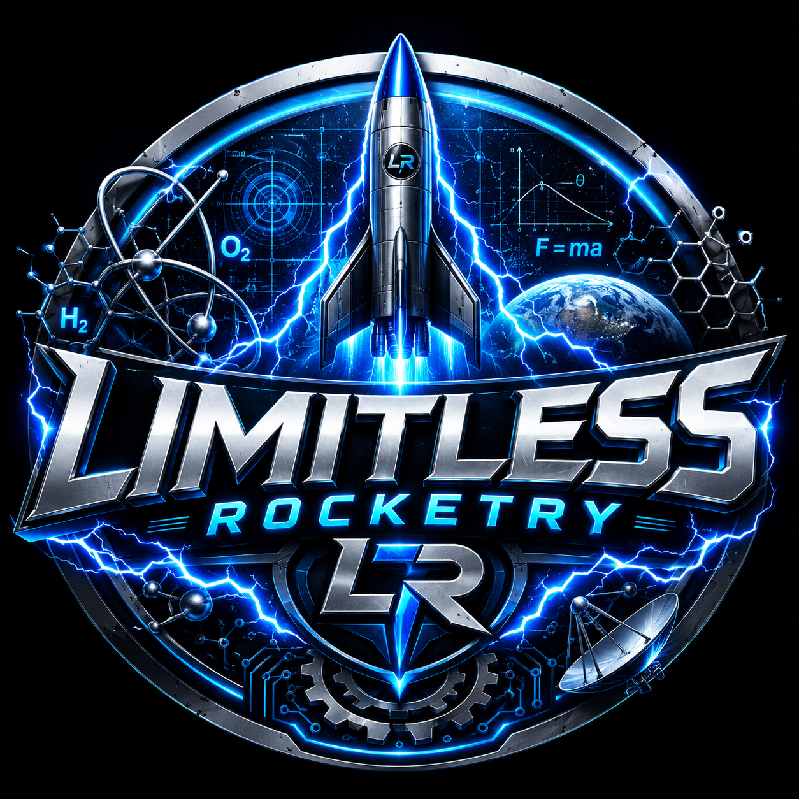

Welcome! We are Joshua and Garrett , an independent student research and rocketry team pushing the boundaries of high-altitude technology and atmospheric science. Driven by curiosity and hands-on engineering, our mission centers on solving two critical challenges in modern rocketry: sustainable avionics power generation and in-flight meteorological data collection.
Standard rocketry avionics rely heavily on traditional batteries, which bring constraints in weight, lifespan, and performance under extreme conditions. Our team is actively experimenting with alternative and novel energy-generation methods to keep critical flight systems, sensors, and telemetry powered dynamically throughout ascent and recovery. In tandem with power systems, our custom rocket payloads serve as micro-observatories for atmospheric research. By capturing real-time meteorological data—such as temperature gradients, pressure profiles, humidity, and airflow dynamics—we aim to gain deeper insights into weather patterns and low-altitude atmospheric behavior.
To lay the foundation for high-altitude research, Garrett is constructing a dual-deployment high-power rocket to earn his Level 1 Tripoli / NAR High-Power Rocketry Certification.
While working toward high-power certification, we are collaborating on smaller-scale test vehicles and modular electronics bays to validate our avionics theories safely and cost-effectively.
Once Level 1 certification is achieved, these experimental payloads will scale up for deployment in high-power flights, collecting high-resolution atmospheric data across extended vertical profiles. "Build small, test rigorously, scale high."